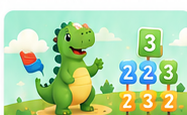

Pensamiento numérico
Reconocimiento de números y relaciones básicas.

Matemáticas divertidas con números, operaciones sencillas y retos visuales en una experiencia amigable.
Reconocimiento de números y relaciones básicas.
Práctica progresiva de sumas y retos matemáticos.
Ejercicios que promueven razonamiento.
La demo interactiva de MateAventura se conectará aquí cuando incorporemos el archivo final de la aplicación.
Explorar otras apps